Randomness has a productive dimension, depending on how you use it. For example, a random forest (RF) model consists of multiple tree models that are generated by a creative use of two types of randomness. One, each tree is built on a randomly selected set of samples by applying Bootstrap on the original dataset. Two, in building each tree, a randomly selected subset of features is used to choose the best split. Figure 62 shows this scheme of random forest.
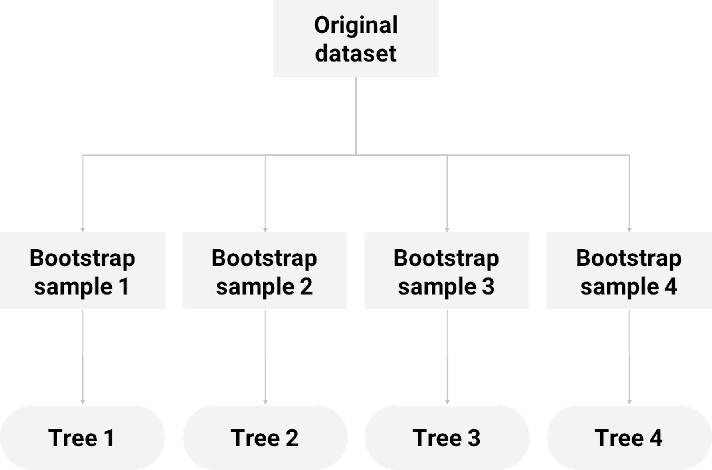 Figure 62: How random forest uses Bootstrap to grow decision trees
Random forest has gained superior performances in many applications, and it (together with its variants) has been a winning approach in some data competitions over the past years. While it is not necessary that an aggregation of many models would lead to better performance than its constituting parts, random forest works because of a number of reasons. Here we use an example to show when the random forest, as a sum, is better than its parts (i.e., the decision trees).
The following R code generates a dataset with two predictors and an outcome variable that has two classes. As shown in Figure 63 (left), the two classes are separable by a linear boundary.
# This is a script for simulation study
rm(list = ls(all = TRUE))
require(rpart)
require(dplyr)
require(ggplot2)
require(randomForest)
ndata <- 2000
X1 <- runif(ndata, min = 0, max = 1)
X2 <- runif(ndata, min = 0, max = 1)
data <- data.frame(X1, X2)
data <- data %>% mutate(X12 = 0.5 * (X1 - X2),
Y = ifelse(X12 >= 0, 1, 0))
data <- data %>% select(-X12) %>% mutate(Y =
as.factor(as.character(Y)))
ggplot(data, aes(x = X1, y = X2, color = Y)) + geom_point() +
labs(title = "Data points")Figure 63: (Left) A linearly separable dataset with two predictors; (middle) the decision boundary of a decision tree model; (right) the decision boundary of a random forest model
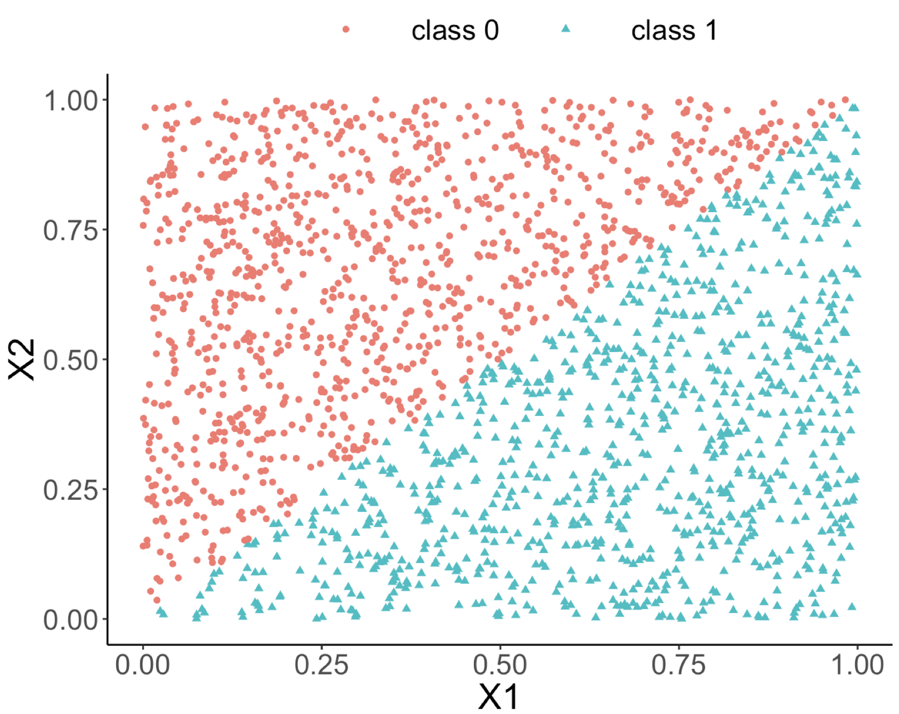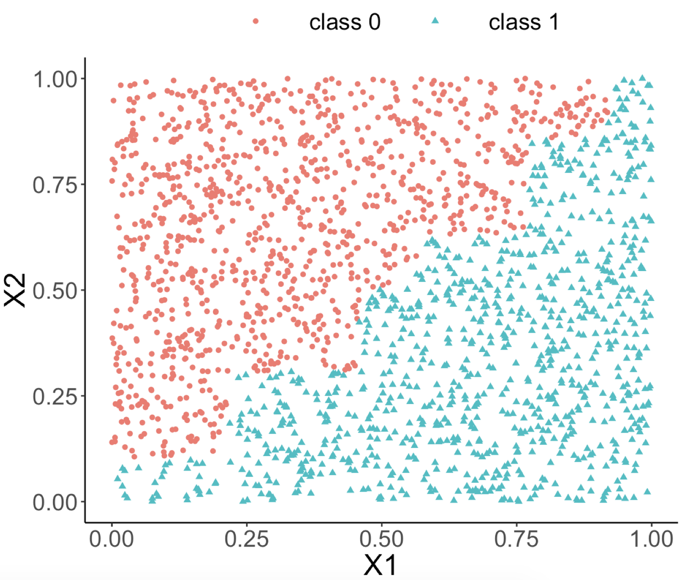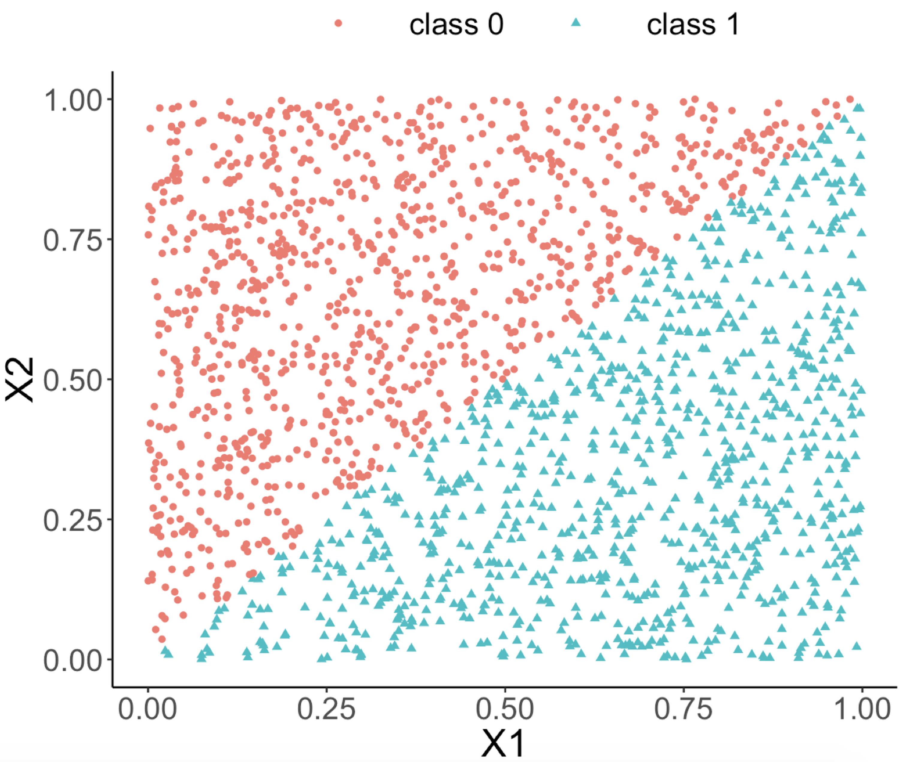Both random forest and decision tree models are applied to the dataset. The classification boundaries of both decision tree and random forest models are shown in Figures 63 (middle) and (right), respectively.
rf_model <- randomForest(Y ~ ., data = data)
tree_model <- rpart(Y ~ ., data = data)
pred_rf <- predict(rf_model, data, type = "prob")[, 1]
pred_tree <- predict(tree_model, data, type = "prob")[, 1]
data_pred <- data %>% mutate(pred_rf_class = ifelse(pred_rf <
0.5, 0, 1)) %>% mutate(pred_rf_class =
as.factor(as.character(pred_rf_class))) %>%
mutate(pred_tree_class = ifelse(pred_tree <
0.5, 0, 1)) %>% mutate(pred_tree_class =
as.factor(as.character(pred_tree_class)))
ggplot(data_pred, aes(x = X1, y = X2,
color = pred_tree_class)) +
geom_point() + labs(title = "Classification boundary from
a single decision tree")
ggplot(data_pred, aes(x = X1, y = X2,
color = pred_rf_class)) +
geom_point() + labs(title = "Classification bounday from
random forests")We can see from Figure 63 (middle) that the classification boundary generated by the decision tree model has a difficult to approximate linear boundary. There is an inherent limitation of a tree model to fit smooth boundaries due to its box-shaped nature resulting from its use of rules to segment the data space for making predictions. In contrast, the classification boundary of the random forest model is smoother than the one of the decision tree, and it can provide better approximation of complex and nonlinear classification boundaries.
Having said that, this is not the only reason why the random forest model is remarkable. After all, many models can model linear boundary, and it is actually not the random forests’ strength. The remarkable thing about a random forest is its capacity, as a tree-based model, to actually model linear boundary. It shows its flexibility, adaptability, and learning capacity to characterize complex patterns in a dataset. Let’s see more details to understand how it works.
Like a decision tree, the learning process of random forests follows the algorithmic modeling framework. It uses an organized set of heuristics, rather than a mathematical characterization. We present the process of building random forest models using a simple example with a small dataset shown in Table 10 that has two predictors, \(x_1\) and \(x_2\), and an outcome variable with two classes.
Table 10: Example of a dataset
| ID | \(x_1\) | \(x_2\) | Class |
|---|---|---|---|
| \(1\) | \(1\) | \(1\) | \(C0\) |
| \(2\) | \(1\) | \(0\) | \(C1\) |
| \(3\) | \(0\) | \(1\) | \(C1\) |
| \(4\) | \(0\) | \(0\) | \(C0\) |
As shown in Figure 62, each tree is built on a resampled dataset that consists of data instances randomly selected from the original data set94 I.e., often with the same sample size as the original dataset and is called sampling with replacement .. As shown in Figure 64, the first resampled dataset includes data instances (represented by their IDs) \(\{1,1,3,4\}\) and is used for building the first tree. The second resampled dataset includes data instances \(\{2,3,4,4\}\) and is used for building the second tree. This process repeats until a specific number of trees is built.
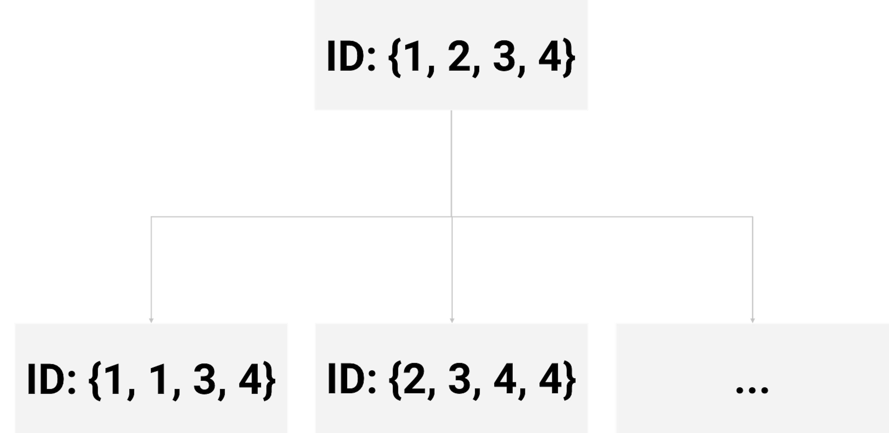 Figure 64: Examples of bootstrapped datasets from the dataset shown in Table 10
The first tree begins with the root node that contains data instances \(\{1,1,3,4\}\). As introduced in Chapter 2, we recursively split a node into two child nodes to reduce impurity (i.e., measured by entropy). This greedy recursive splitting process is also used to build each decision tree in a random forest model. A slight variation is that, in the R package randomForest, the Gini index is used to measure impurity instead of entropy.
The Gini index for a data set is defined as95 \(C\) is the number of classes of the outcome variable, and \(p_{c}\) is the proportion of data instances that come from the class \(c\).
\[ \operatorname{Gini} =\sum_{c=1}^{C} p_{c}\left(1-p_{c}\right). \]
The Gini index plays the same role as the entropy (more details could be found in the Remarks section). Similar as the information gain (IG), the Gini gain can be defined as
\[\nabla \operatorname{Gini} = \operatorname{Gini}_s - \sum\nolimits_{i=1,\cdots,n} w_i \operatorname{Gini}_i.\]
Here, \(\operatorname{Gini}_s\) is the Gini index at the node to be split; \(w_{i}\) and \(\operatorname{Gini}_{i}\), are the proportion of samples and the Gini index at the \(i^{th}\) children node, respectively.
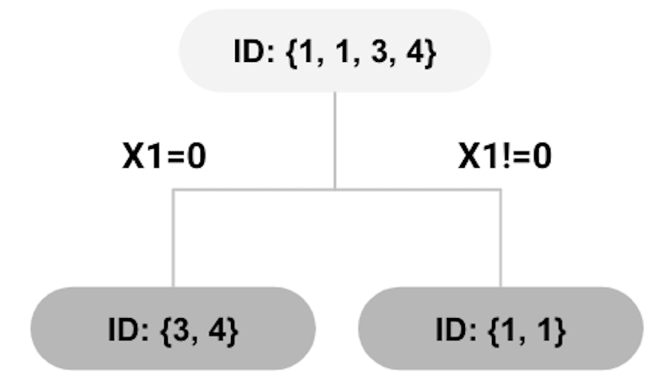 Figure 65: root node split using \(x_{1}=0\)
Let’s go back to the first tree that begins with the root node containing data instances \(\{1,1,3,4\}\). There are three instances that are associated with the class \(C0\) (thus, \(p_0 = \frac{3}{4}\)), one instance with \(C1\) (thus, \(p_1 = \frac{1}{4}\)). The Gini index of the root node is calculated as
\[ \frac{3}{4} \times \frac{1}{4}+\frac{1}{4} \times \frac{3}{4}=0.375. \]
To split the root node, candidates of splitting rules are:
[Rule 1:] \(x_{1}=0 \text { versus } x_{1} \neq 0\).
[Rule 2:] \(x_{2}=0 \text { versus } x_{2} \neq 0\).
The decision tree model introduced in Chapter 2 would evaluate each of the possible splitting rules, and select the one that yields the maximum Gini gain to split the node. However, for random forests, it randomly selects the variables for splitting a node96 In general, for a dataset with \(p\) variables, \(\sqrt{p}\) variables are randomly selected for splitting.. In our example, as there are two variables, we assume that \(x_{1}\) is randomly selected for splitting the root node. Thus, \(x_{1}=0\) is used for splitting the root node which generates the decision tree model as shown in Figure 65.
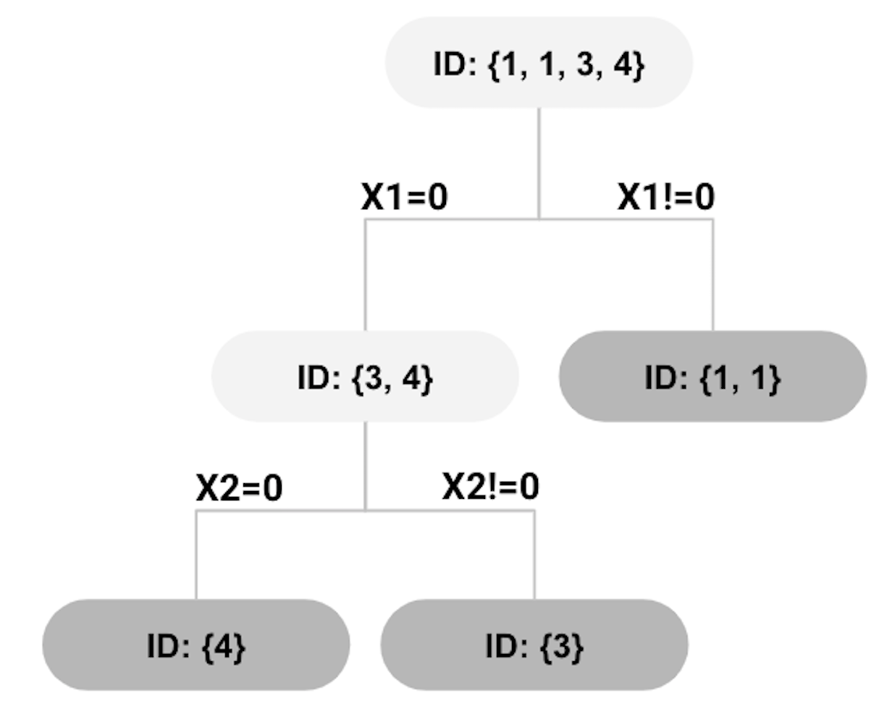 Figure 66: second split using \(x_{2}=0\)
The Gini gain for the split shown in Figure 65 can be calculated as
\[ 0.375-0.5 \times 0-0.5 \times 0.5=0.125. \]
The right node in the tree shown in Figure 65 has reached a perfect state of homogeneity97 Which is, in practice, a rare phenomenon.. The left node, however, contains two instances \(\{3,4\}\) that are associated with two classes. We further split the left node. Assume that this time \(x_{2}\) is randomly selected. The left node can be further split as shown in Figure 66.
All nodes cannot be split further. The final tree model is shown in Figure 67, while each leaf node is labeled with the majority class of the instances in the node, such that they become decision nodes.
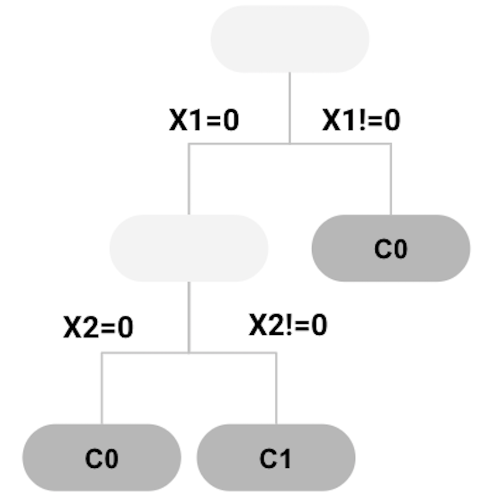 Figure 67: tree model trained
Applying the decision tree in Figure 67 to the \(4\) data points as shown in Table 10, we can get the predictions as shown in Table 11. The error rate is \(25\%\).
Table 11: Example of a dataset
| ID | \(x_1\) | \(x_2\) | Class | Prediction |
|---|---|---|---|---|
| \(1\) | \(1\) | \(1\) | \(C0\) | \(C0\) |
| \(2\) | \(1\) | \(0\) | \(C1\) | \(C0\) |
| \(3\) | \(0\) | \(1\) | \(C1\) | \(C1\) |
| \(4\) | \(0\) | \(0\) | \(C0\) | \(C1\) |
Similarly, the second, third, …, and the \(m^{th}\) trees can be built. Usually, in random forest models, tree pruning is not needed. Rather, we use a parameter to control the depth of the tree models to be created (i.e., use the parameter nodesize in randomForest).
When a random forest model is built, to make a prediction for a data point, each tree makes a prediction, then all the predictions are combined; e.g., for continuous outcome variable, the average of the predictions is used as the final prediction; for classification outcome variable, the class that wins majority among all trees is the final prediction.
The 5-Step R Pipeline. Step 1 and Step 2 get data into your R work environment and make appropriate preprocessing.
# Step 1 -> Read data into R workstation
# RCurl is the R package to read csv file using a link
library(RCurl)
url <- paste0("https://raw.githubusercontent.com",
"/analyticsbook/book/main/data/AD.csv")
AD <- read.csv(text=getURL(url))
# str(AD)# Step 2 -> Data preprocessing
# Create your X matrix (predictors) and Y vector
# (outcome variable)
X <- AD[,2:16]
Y <- AD$DX_bl
Y <- paste0("c", Y)
Y <- as.factor(Y)
# Then, we integrate everything into a data frame
data <- data.frame(X,Y)
names(data)[16] = c("DX_bl")
# Create a training data (half the original data size)
train.ix <- sample(nrow(data),floor( nrow(data)/2) )
data.train <- data[train.ix,]
# Create a testing data (half the original data size)
data.test <- data[-train.ix,]Step 3 uses the R package randomForest to build your random forest model.
# Step 3 -> Use randomForest() function to build a
# RF model
# with all predictors
library(randomForest)
rf.AD <- randomForest( DX_bl ~ ., data = data.train,
ntree = 100, nodesize = 20, mtry = 5)
# Three main arguments to control the complexity
# of a random forest modelDetails for the three arguments in randomForest: The ntree is the number of trees98 The more trees, the more complex the random forest model is.. The nodesize is the minimum sample size of leaf nodes99 The larger the sample size in leaf nodes, the less depth of the trees; therefore, the less complex the random forest model is.. The mtry is a parameter to control the degree of randomness when your RF model selects variables to split nodes100 For classification, the default value of mtry is \(\sqrt{p}\), where \(p\) is the number of variables; for regression, the default value of mtry is \(p/3\)..
Step 4 is prediction. We use the predict() function
# Step 4 -> Predict using your RF model
y_hat <- predict(rf.AD, data.test,type="class")Step 5 evaluates the prediction performance of your model on the testing data.
# Step 5 -> Evaluate the prediction performance of your RF model
# Three main metrics for classification: Accuracy,
# Sensitivity (1- False Positive), Specificity (1 - False Negative)
library(caret)
confusionMatrix(y_hat, data.test$DX_bl)The result is shown below. It is an information-rich object101 To learn more about an R object, function, and package, please check out the online documentation that is usually available for an R package that has been released to the public. For example, for the confusionMatrix in the R package caret, check out this link: https://www.rdocumentation.org/packages/caret/versions/6.0-84/topics/confusionMatrix. Some R packages also come with a journal article published in the Journal of Statistical Software. E.g., for caret, see Kuhn, M., Building predictive models in R using the caret package, Journal of Statistical Software, Volume 28, Issue 5, 2018, http://www.jstatsoft.org/article/view/v028i05/v28i05.pdf..
## Confusion Matrix and Statistics
##
## Reference
## Prediction c0 c1
## c0 136 31
## c1 4 88
##
## Accuracy : 0.8649
## 95% CI : (0.8171, 0.904)
## No Information Rate : 0.5405
## P-Value [Acc > NIR] : < 2.2e-16
##
## Kappa : 0.7232
##
## Mcnemar's Test P-Value : 1.109e-05
##
## Sensitivity : 0.9714
## Specificity : 0.7395
## Pos Pred Value : 0.8144
## Neg Pred Value : 0.9565
## Prevalence : 0.5405
## Detection Rate : 0.5251
## Detection Prevalence : 0.6448
## Balanced Accuracy : 0.8555
##
## 'Positive' Class : c0 We can also draw the ROC curve
# ROC curve is another commonly reported metric
# for classification models
library(pROC)
# pROC has the roc() function that is very useful here
y_hat <- predict(rf.AD, data.test,type="vote")
# In order to draw ROC, we need the intermediate prediction
# (before RF model binarize it into binary classification).
# Thus, by specifying the argument type="vote", we can
# generate this intermediate prediction. y_hat now has
# two columns, one corresponds to the ratio of votes the
# trees assign to one class, and the other column is the
# ratio of votes the trees assign to another class.
main = "ROC Curve"
plot(roc(data.test$DX_bl, y_hat[,1]),
col="blue", main=main)And we can have the ROC curve as shown in Figure 68.
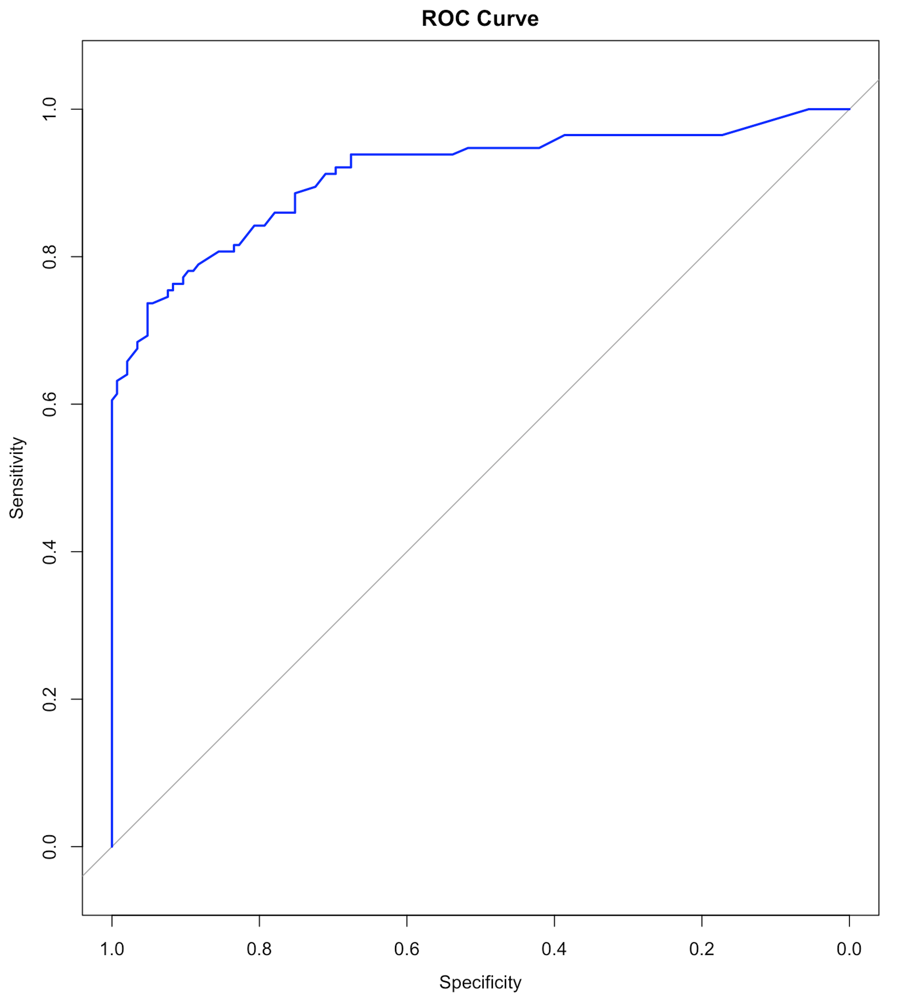 Figure 68: ROC curve of the RF model
Beyond the 5-Step R Pipeline. Random forests are complex models that have many parameters to be tuned. In Chapter 2 and Chapter 3 we have used the step() function for automatic model selection for regression models. Part of the reason this is possible for regression models is that model selection for regression models largely concerns variable selection only. For decision tree and random forest models, the model selection concerns not only variable selection, but also many other aspects, such as the depth of the tree, the number of trees, and the degree of randomness that would be used in model training. This makes the model selection for tree models a craft. An individual’s experience and insights make a difference, and some may find a better model, even the same package is used on the same dataset to build models102 There is often an impression that a good model is built by a good pipeline, like this 5-step pipeline. This impression is a reductive view, since it only looks at the final stage of data analytics. Like manufacturing, when the process is mature and we are able to see the rationale behind every detail of the manufacturing process, we may lose sight of those alternatives that had been considered, experimented, then discarded (or withheld) for various reasons..
To see how these parameters impact the models, we conduct some experiments. The number of trees is one of the most important parameters of random forests that we’d like to be tuned well. We can build different random forest models by tuning the parameter ntree in randomForest. For each selection of the number of trees, we first randomly split the dataset into training and testing datasets, then train the model on the training dataset, and evaluate its performance on the testing dataset. This process of data splitting, model training, and testing is repeated \(100\) times. We can use boxplots to show the overall performance of the models. Results are shown in Figure 69.
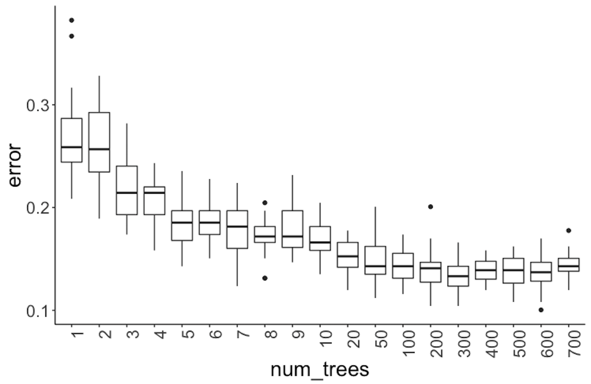 Figure 69: Error v.s. number of trees in a random forest model
library(rpart)
library(dplyr)
library(tidyr)
library(ggplot2)
require(randomForest)
library(RCurl)
set.seed(1)
theme_set(theme_gray(base_size = 15))
url <- paste0("https://raw.githubusercontent.com",
"/analyticsbook/book/main/data/AD.csv")
data <- read.csv(text=getURL(url))
target_indx <- which(colnames(data) == "DX_bl")
data[, target_indx] <-
as.factor(paste0("c", data[, target_indx]))
rm_indx <- which(colnames(data) %in% c("ID", "TOTAL13",
"MMSCORE"))
data <- data[, -rm_indx]
results <- NULL
for (itree in c(1:9, 10, 20, 50, 100, 200, 300, 400, 500,
600, 700)) {
for (i in 1:100) {
train.ix <- sample(nrow(data), floor(nrow(data)/2))
rf <- randomForest(DX_bl ~ ., ntree = itree, data =
data[train.ix, ])
pred.test <- predict(rf, data[-train.ix, ], type = "class")
this.err <- length(which(pred.test !=
data[-train.ix, ]$DX_bl))/length(pred.test)
results <- rbind(results, c(itree, this.err))
}
}
colnames(results) <- c("num_trees", "error")
results <- as.data.frame(results) %>%
mutate(num_trees = as.character(num_trees))
levels(results$num_trees) <- unique(results$num_trees)
results$num_trees <- factor(results$num_trees,
unique(results$num_trees))
ggplot() + geom_boxplot(data = results, aes(y = error,
x = num_trees)) + geom_point(size = 3)It can be seen in Figure 69 that when the number of trees is small, particularly, less than \(10\), the improvement on prediction performance of random forest is substantial with trees added. However, the error rates become stable after the number of trees reaches \(100\).
Next, let’s consider the number of features (i.e., use the parameter mtry in the function randomForest). Here, \(100\) trees are used. For each number of features, again, following the process we have used in the experiment with the number of trees, we draw the boxplots in Figure 70.
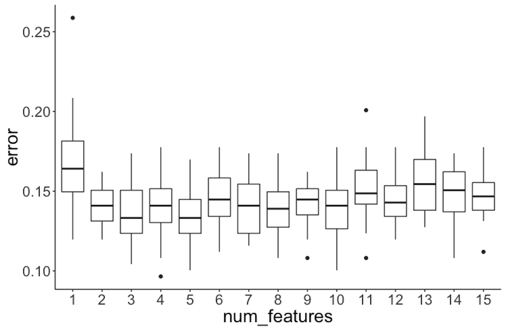 Figure 70: Error v.s. number of features in a random forest model
It can be seen that the error rates are not significantly different when the number of features changes.
library(rpart)
library(dplyr)
library(tidyr)
library(ggplot2)
require(randomForest)
library(RCurl)
set.seed(1)
theme_set(theme_gray(base_size = 15))
url <- paste0("https://raw.githubusercontent.com",
"/analyticsbook/book/main/data/AD.csv")
data <- read.csv(text=getURL(url))
target_indx <- which(colnames(data) == "DX_bl")
data[, target_indx] <- as.factor(
paste0("c", data[, target_indx]))
rm_indx <- which(colnames(data) %in% c("ID", "TOTAL13",
"MMSCORE"))
data <- data[, -rm_indx]
nFea <- ncol(data) - 1
results <- NULL
for (iFeatures in 1:nFea) {
for (i in 1:100) {
train.ix <- sample(nrow(data), floor(nrow(data)/2))
rf <- randomForest(DX_bl ~ ., mtry = iFeatures, ntree = 100,
data = data[train.ix,])
pred.test <- predict(rf, data[-train.ix, ], type = "class")
this.err <- length(which(pred.test !=
data[-train.ix, ]$DX_bl))/length(pred.test)
results <- rbind(results, c(iFeatures, this.err))
}
}
colnames(results) <- c("num_features", "error")
results <- as.data.frame(results) %>%
mutate(num_features = as.character(num_features))
levels(results$num_features) <- unique(results$num_features)
results$num_features <- factor(results$num_features,
unique(results$num_features))
ggplot() + geom_boxplot(data = results, aes(y = error,
x = num_features)) + geom_point(size = 3)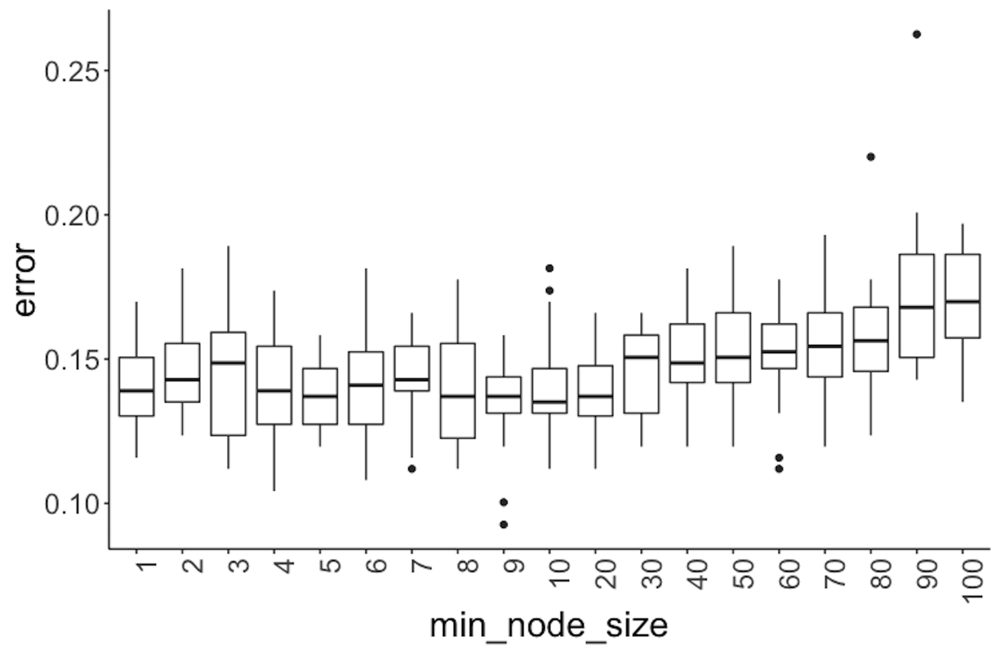 Figure 71: Error v.s. node size in a random forest model
Further, we experiment with the minimum node size (i.e., use the parameter nodesize in the function randomForest), that is, the minimum number of instances at a node. Boxplots of their performances are shown in Figure 71.
library(dplyr)
library(tidyr)
library(ggplot2)
require(randomForest)
library(RCurl)
set.seed(1)
theme_set(theme_gray(base_size = 15))
url <- paste0("https://raw.githubusercontent.com",
"/analyticsbook/book/main/data/AD.csv")
data <- read.csv(text=getURL(url))
target_indx <- which(colnames(data) == "DX_bl")
data[, target_indx] <- as.factor(paste0("c", data[, target_indx]))
rm_indx <- which(colnames(data) %in% c("ID", "TOTAL13",
"MMSCORE"))
data <- data[, -rm_indx]
results <- NULL
for (inodesize in c(1, 2, 3, 4, 5, 6, 7, 8, 9, 10, 20, 30,
40, 50, 60, 70, 80,90, 100)) {
for (i in 1:100) {
train.ix <- sample(nrow(data), floor(nrow(data)/2))
rf <- randomForest(DX_bl ~ ., ntree = 100, nodesize =
inodesize, data = data[train.ix,])
pred.test <- predict(rf, data[-train.ix, ], type = "class")
this.err <- length(which(pred.test !=
data[-train.ix, ]$DX_bl))/length(pred.test)
results <- rbind(results, c(inodesize, this.err))
# err.rf <- c(err.rf, length(which(pred.test !=
# data[-train.ix,]$DX_bl))/length(pred.test) )
}
}
colnames(results) <- c("min_node_size", "error")
results <- as.data.frame(results) %>%
mutate(min_node_size = as.character(min_node_size))
levels(results$min_node_size) <- unique(results$min_node_size)
results$min_node_size <- factor(results$min_node_size,
unique(results$min_node_size))
ggplot() + geom_boxplot(data = results, aes(y = error,
x = min_node_size)) + geom_point(size = 3)Figure 71 shows that the error rates start to rise when the minimum node size equals 40. And the error rates are not substantially different when the minimum node size is less than 40. All together, these results provide information for us to select models.
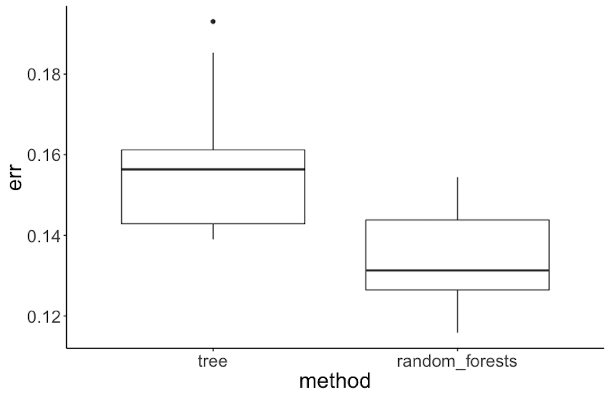 Figure 72: Performance of random forest v.s. tree model on the Alzheimer’s disease data
To compare random forest with decision tree, we can also follow a similar process, i.e., half of the dataset is used for training and the other half for testing. This process of splitting data, training the model on training data, and testing the model on testing data is repeated \(100\) times, and boxplots of the errors from decision trees and random forests are plotted in Figure 72 using the following R code.
library(rpart)
library(dplyr)
library(tidyr)
library(ggplot2)
library(RCurl)
require(randomForest)
set.seed(1)
theme_set(theme_gray(base_size = 15))
url <- paste0("https://raw.githubusercontent.com",
"/analyticsbook/book/main/data/AD.csv")
data <- read.csv(text=getURL(url))
target_indx <- which(colnames(data) == "DX_bl")
data[, target_indx] <- as.factor(paste0("c", data[, target_indx]))
rm_indx <- which(colnames(data) %in%
c("ID", "TOTAL13", "MMSCORE"))
data <- data[, -rm_indx]
err.tree <- NULL
err.rf <- NULL
for (i in 1:100) {
train.ix <- sample(nrow(data), floor(nrow(data)/2))
tree <- rpart(DX_bl ~ ., data = data[train.ix, ])
pred.test <- predict(tree, data[-train.ix, ], type = "class")
err.tree <- c(err.tree, length(
which(pred.test != data[-train.ix, ]$DX_bl))/length(pred.test))
rf <- randomForest(DX_bl ~ ., data = data[train.ix, ])
pred.test <- predict(rf, data[-train.ix, ], type = "class")
err.rf <- c(err.rf, length(
which(pred.test != data[-train.ix, ]$DX_bl))/length(pred.test))
}
err.tree <- data.frame(err = err.tree, method = "tree")
err.rf <- data.frame(err = err.rf, method = "random_forests")
ggplot() + geom_boxplot(
data = rbind(err.tree, err.rf), aes(y = err, x = method)) +
geom_point(size = 3)Figure 72 shows that the error rates of decision trees are higher than those for random forests, indicating that random forest is a better model here.